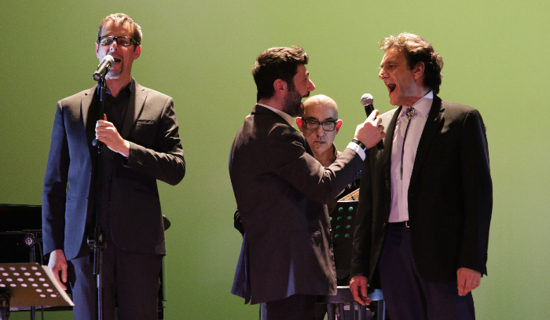
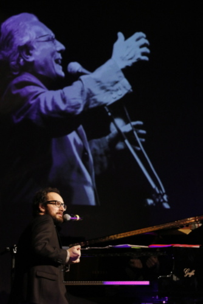

 Andrea Achilli, segue “Grazie Maestro” dagli esordi con il suo stile impeccabile. Qui mentre canta “Veronica” accompagnato dal duo Usini, Ardenghi
Si accompagna con estrema maestria al pianoforte nell'interpretazione dei brani forse tra i più particolari del Maestro. Come: “il cane con i capelli” e diversi altri.
